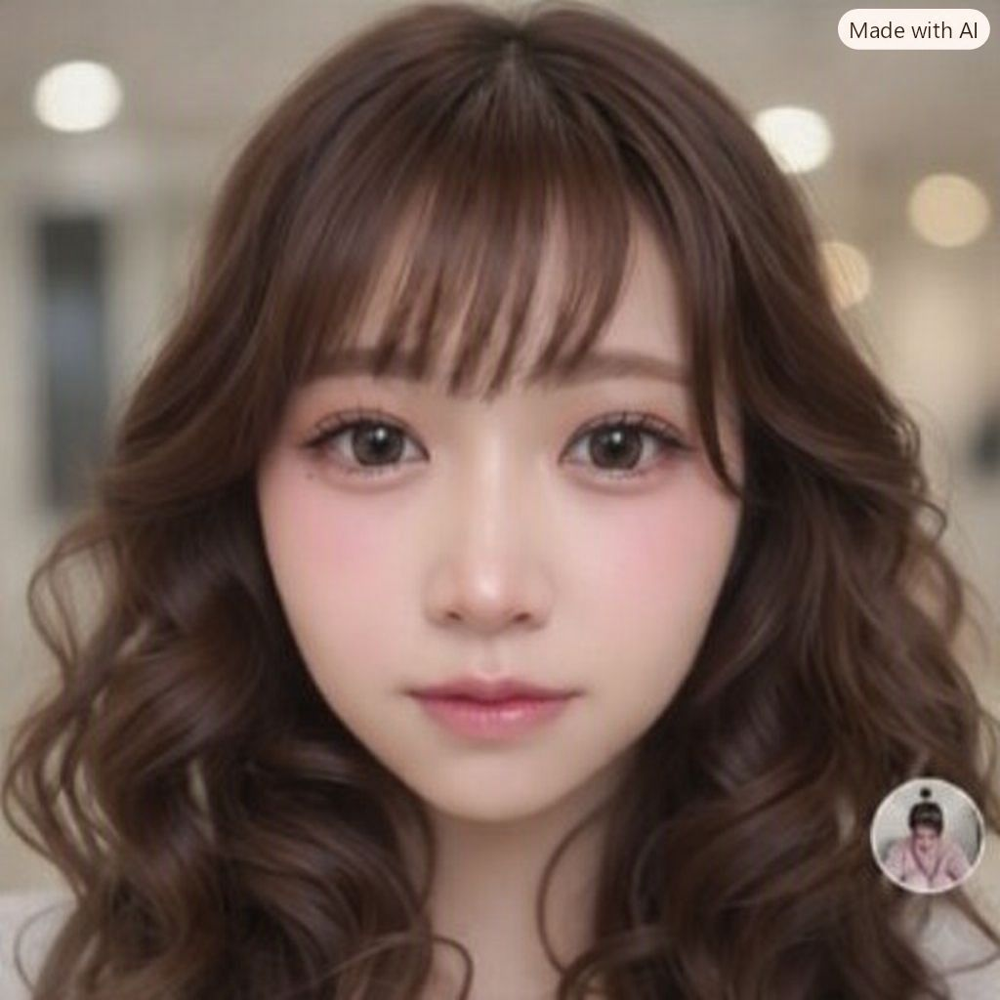

⚠️ 音声を鳴らすため、画面右上の「…」を押して「Safari（またはChrome）で開く」を選んでね！
えーけんいっきゅーとらい
🏠 もどる
🥃
🍾
🍸
英単語 & 熟語
え
ー
け
ん
い
っ
き
ゅ
ー
と
ら
い
ver00009
🥃
🥂
🍷
🍸
🍾

👩
'">
🥃
🍷
🏆
💡
🎯
コースを えらんでね
ランクA ☀️
（最頻出）--語
ランクB ☁️
（重要難語）--語
ランクC 🌋
（超難関語）--語
熟語 ⚡️
（重要句動詞）--語
GO
● ● ●
をタップし、デフォルトのブラウザで開いて下さい。
bolster
/bóʊlstɚ/
〜を強化する・支援する
〇
✕
👉 〇 か ✕ を おしてね！